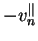
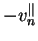

While (7.25) and (7.28) are exact solutions of
the equations of motion, both are difficult to evaluate numerically
for very large or small values of  .
There is a physical
reason for this which may be explained by analogy with the theory of
elasticity.
.
There is a physical
reason for this which may be explained by analogy with the theory of
elasticity.
Consider (7.25) for large  .
The problem solved by
.
The problem solved by  is formally identical
to that for the sum of the bending moments about two perpendicular axes
in a uniform elastic plate subjected to a distributed
bending moment about the edge
proportional to 
(Timoshenko & Woinowsky-Krieger 1959, p. 93).
The applied moment
vanishes along the edges
is formally identical
to that for the sum of the bending moments about two perpendicular axes
in a uniform elastic plate subjected to a distributed
bending moment about the edge
proportional to 
(Timoshenko & Woinowsky-Krieger 1959, p. 93).
The applied moment
vanishes along the edges  and is odd-symmetric on the edges
and is odd-symmetric on the edges
 . Thus, by Saint-Venant's principle
(Love 1944, p. 131), the
effects of the applied moment are of
negligible magnitude at distances which are large compared with the
width of the edges
. Thus, by Saint-Venant's principle
(Love 1944, p. 131), the
effects of the applied moment are of
negligible magnitude at distances which are large compared with the
width of the edges  : 1/
: 1/ in terms of
in terms of  . For
. For
 ,
then, each end-wall should be sensibly independent of the other's
presence. The exact solution (7.25), however,
combines the effects of the two.
,
then, each end-wall should be sensibly independent of the other's
presence. The exact solution (7.25), however,
combines the effects of the two.
For small  , Stokes (1899) has pointed out that, for the
general Hele-Shaw problem, the velocity field will only differ from the
limiting form (7.26) over a distance from obstacles or
walls comparable with the wall separation.
, Stokes (1899) has pointed out that, for the
general Hele-Shaw problem, the velocity field will only differ from the
limiting form (7.26) over a distance from obstacles or
walls comparable with the wall separation.
In this section, solutions are derived which account for the effect of the
nearest short wall first. The basic solutions to be perturbed are
(7.24) and
(7.27) for large and small  , respectively.
Since neither of the basic solutions satisfy the condition
(7.21) at all parts of the boundary,
both the large and small
, respectively.
Since neither of the basic solutions satisfy the condition
(7.21) at all parts of the boundary,
both the large and small  asymptotic expansions
are singular perturbation problems.
asymptotic expansions
are singular perturbation problems.